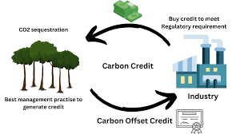
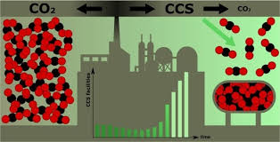
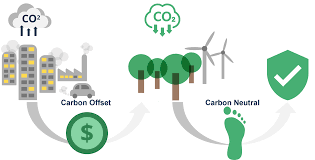

Carbon dioxide (CO2) is a natural, colorless, and odorless gas essential for life on Earth. It plays a crucial role in the carbon cycle, but human activities have significantly increased its concentration in the atmosphere, leading to the greenhouse effect, global warming, and climate change. Addressing excess CO2 through reducing emissions and investing in carbon offset projects is critical for promoting environmental sustainability.
Welcome to Carbon Credits
We are committed to fostering a sustainable future by helping individuals and businesses reduce their carbon footprint. Our platform offers a comprehensive solution for purchasing high-quality carbon credits, enabling you to offset your emissions and contribute to global environmental goals.
About CO2

Impact of CO2 Emissions
CO2 Global Warming:
CO₂ is a greenhouse gas, which traps heat in the atmosphere, leading to an overall increase in Earth's average temperature. This phenomenon is known as global warming.
Extreme Weather Events:
Increased temperatures lead to more frequent and severe weather events such as hurricanes, droughts, heatwaves, and heavy rainfall.
Melting Ice Caps and Glaciers:
Rising temperatures cause polar ice caps and glaciers to melt, contributing to rising sea levels.
Climate Migration:
Rising sea levels and extreme weather events can displace populations, leading to climate migration. This can cause social and political tensions as people move from affected areas to less affected regions.
Energy Costs:
Increased temperatures can lead to higher energy demands for cooling, straining energy supplies and increasing costs for consumers and businesses.
Solutions to Reduce CO2 Emissions

Reducing CO2 emissions is crucial for addressing climate change and promoting a sustainable future. Transitioning to renewable energy sources like wind, solar, and hydroelectric power, improving energy efficiency in homes, buildings, and industries, and focusing on reforestation and afforestation efforts are effective strategies to achieve this goal. Adopting sustainable transportation options such as electric vehicles, public transit, cycling, and walking can also help reduce carbon footprint from personal and commercial travel.
- Transition to Renewable Energy: Invest in and expand the use of renewable energy sources like solar, wind, and hydroelectric power. This transition reduces the dependence on fossil fuels and decreases the amount of CO2 released into the atmosphere. Governments and businesses can support this by providing incentives for renewable energy projects and adopting policies that favor clean energy.
- Enhance Energy Efficiency:Implement energy-saving measures in residential, commercial, and industrial sectors. This includes upgrading to energy-efficient appliances, improving building insulation, using smart thermostats, and adopting energy management systems. These improvements can reduce overall energy consumption and lower CO2 emissions.
- Promote Reforestation and Afforestation: Support and engage in reforestation and afforestation projects. Planting trees and restoring forests can significantly increase the amount of CO2 absorbed from the atmosphere. Governments, NGOs, and communities can collaborate on large-scale tree-planting initiatives and conservation efforts to preserve existing forests.
- Adopt Sustainable Transportation: Encourage the use of electric vehicles, public transportation, cycling, and walking. Developing infrastructure for electric vehicles, such as charging stations, and improving public transit systems can make sustainable transportation more accessible and attractive. Additionally, policies that promote carpooling and the use of alternative fuels can further reduce emissions from the transportation sector.
Contact Us
Get in touch with us to learn more about carbon credits...
